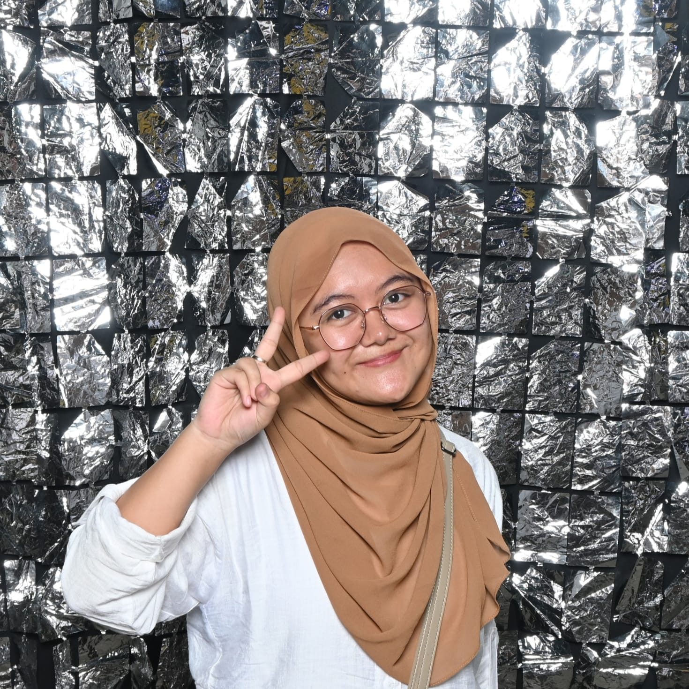

Saya seorang mahasiswa Program Studi S1 Pendidikan Guru sekolah Dasar di Universitas Jember. Saya memiliki minat yang besar dalam dunia pendidikan dan pengembangan peserta didik. Selain itu, saya juga memiliki ketertarikan di bidang seni yang membantu saya mengembangkan kreativitas dan cara berpikir yang inovatif. Di waktu luang, saya gemar membaca novel untuk membantu memperluas wawasan dan memahami berbagau sudut pandang kehidupan. Saya percaya bahwa pendidikan memiliki peran penting dalam membentuk masa depan yang lebih baik, sehingga saya terus berusaha mengembangkan keterampilan untuk menjadi pribadi yang bermanfaat bagi orang lain.